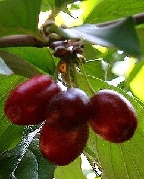

Woher kommt der Name Kornelkirsche?
  Bei den Römern hieß die Kornelkirsche Cornus. Aus ihrem Holz stellten sie Lanzen her.
Bei den Römern hieß die Kornelkirsche Cornus. Aus ihrem Holz stellten sie Lanzen her.
Das Holz der Kornelkirsche ist sehr hart, daher wird sie auch Hartriegel genannt.
Die Früchte sehen aus wie langgezogene Kirschen. Sie sind rot und saftig und haben einen Steinkern.
Auf Englisch heißt die Kornelkirsche
Cornel Tree.